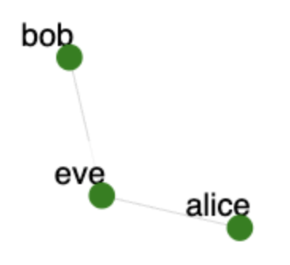

Overview
This exercise demonstrates how a simple substitution cipher can be broken using frequency analysis. It then asks the students replace that cipher with a stronger AES cipher using OpenSSL. This exercise helps students learn the following concepts: (1) Traffic sniffing and payload extraction, (2) Using frequency analysis to break substitution ciphers, (3) Using OpenSSL for strong encryption.
Required Reading
Symmetric encryption uses the same key at sender and at receiver. It is assumed that both parties have exchanged this key somehow prior to communication. Encryption algorithm is public and only the key stays secret to ensure confidentiality.
Substitution Cipher
A substitution cipher is a simple cipher where each symbol of plaintext is replaced by another symbol of ciphertext. Usually symbols are drawn from the same alphabet, thus one letter in English plaintext would be replaced with another letter from the English alphabet. The key in this case is the mapping of the original letters to those in ciphertext.
Substitution ciphers are vulnerable to frequency analysis. When they are used to encrypt text in natural language, the attacker can pair the most frequent letters from that language with most frequent symbols in ciphertext and thus partially recover the key. Because natural language has many redundancies, the attacker can guess words in the partially recovered text and thus recover more letters until the whole message is revealed. Frequency analysis and attacker's guesses will not always succeed. A lot of the cryptoanalysis process is trial and error, backtracking and keeping score of guesses that did not pan out. How will the attacker know they succeeded? The decrypted text will start making sense!
Introduction
In this exercise Alice and Bob are communicating using symmetric encryption. Eve is in the middle and thus able to sniff their messages. Alice is using a simple substitution cipher, the original message is all lowercase and in English, and spaces and punctuations from the original message are preserved in ciphertext.
Assignment Instructions
Setup
- If you don't have an account, follow the instructions here.
-
Create an instance of this exercise by following the instructions here, using
cryptoas Lab name. Your topology will look like below:
.
Tasks
1. Capture the Message
On node eve use tcpdump or wireshark to capture entire packets sent from Alice to Bob. Note that you only care about packets going to port 5005. You can also write a Python script to capture the packets. Once you notice that the payload repeats stop and note the encrypted message in a file ciphertext.txt. If you just copy/pasted the payload from tcpdump note that spaces are encoded as dots in that output, and '\n' represents a newline.
2. Break the Encryption
Write a script that calculates the frequency of letters in ciphertext. Using a letter frequency table, such as this one extend your script to try some most-frequent-letter replacements. After each trial your script should display the partially-decrypted message and clearly show (e.g., by capitalizing) which letters remain to be decrypted. After each trial your script should allow the user to input a mapping (e.g., ask for the letter from the message to be replaced by another letter), to go back one step or more (one by one) and then display the new version of the message. Once you recover the original message save the mapping and the message in files key.txt and plaintext.txt. Note that some letters may remain unmapped in the key, that is OK. Format the key to show the original letter and the encrypted letter on one line, separated by a space, like this:
a t
b m
...
z x3. Use a Strong Cipher
If you were able to retrieve the original message, use it in this step. Otherwise make up your own message. Use the generic encrypt.py in your home directory on alice node. Add steps to encrypt the message using AES cipher - you do not need to decrypt it at bob node. Move the resulting ciperhtext-aes.txt into file message.txt in /tmp/alice. It will start being sent to bob. Re-run eve's sniffing code. What does it show now? Note it in ciphertext-aes.txt. Also note your message in plaintext-aes.txt and your key in key-aes.txt.
What can go wrong
There's not much to go wrong here. However, you may need to do some trial-and-error iterations during cipher-breaking. Be patient and use punctuation and spaces as hints to help you when you're guessing.
Submission Instructions
Put the following files into a folder crypto-break:
ciphertext.txtplaintext.txtkey.txt- Your cipher-breaking code
ciphertext-aes.txtplaintext-aes.txt- Your modified
encrypt.py key-aes.txt
Create a tar.gz file by typing tar -czf submission.tgz crypto-break. Submit your tarball to your instructor.